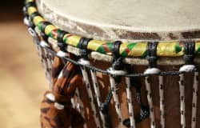
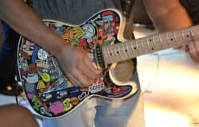

A Música Brasileira
A música, como todos sabem, é um dos principais elementos que compõem a cultura de um povo. No Brasil não poderia ser diferente, embora nossa história seja relativamente recente, recebemos influências de diversas partes do globo, porém podemos classificar em três as principais origens culturais que geraram a cultura brasileira como um todo. São elas a cultura europeia, indígena e africana.
Embora a música obviamente já existisse no Brasil antes de 1500, foi a partir desta data que nosso território começou a ser influenciado pela música europeia, que trazia com ela elementos impactantes como o sistema harmônico e os diversos instrumentos populares na Europa, além da língua escrita. Não é preciso dizer que Portugal influenciou fortemente a nossa base cultural musical, já que muitas músicas portuguesas ou europeias já vieram prontas para o nosso território e aqui começaram a sofrer mudanças ao mesmo tempo que influenciavam as novas criações musicais.
Por outro lado, a contribuição africana marcou principalmente o nosso ritmo e as nossas danças, consolidando-se na música popular e na folclórica. Essa contribuição somada à indígena, principalmente no Norte e Nordeste, talvez tenha sido o segredo para fazer da música brasileira realmente única.
A mistura destes três ingredientes vitais tem sido crucial para a formação da identidade do povo brasileiro, já que não é limitada apenas à música, mas se espalha por praticamente todos os elementos que compõem a nossa cultura como dança, arte, vestuário, comidas típicas, mudanças no idioma, hábitos e costumes, religião, entre outros. Ela não carrega apenas nosso gosto ou ritmo, mas também a nossa história.
- Fonte:
- Wikipédia